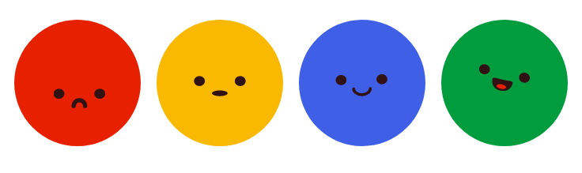

Requisitos
- Apache e PHP 7 (veja um tutorial sobre como instalar um servidor web)
É um micro framework PHP simples e rápido para comunicação dentro de redes locais. Permite criar uma conexão persistente e bidirecional para ser utilizada em sua aplicação web sem complicações.
Websockets é o recurso que tornou possível usar o browser para abrir uma conexão que se mantém sempre aberta e disponível através da qual podemos enviar e receber informações simultaneamente e sem interrupções.
Cria e mantém nossa conexão além de gerenciar os usuários que se conectarem ao nosso servidor. Inicializado com um quase nada de comandos no terminal.
Apresenta dois exemplos simples e reutilizáveis para quem quer saber a opinião de sua audiência em tempo real ou competir com os amigos num jogo de plataforma.
| Via terminal | Via browser |
|---|
mac, windows e linux
servidor local
endereço ip na rede local
porta disponível
alterar ip e porta no arquivo run.php
rodar script no terminal e explicar saídas (websockets rodando, cliente conectado e desconectado)
alterar endereço ws:// no common.js
Entrar na pasta cd pasta
Inicializar conexão php run.php
php server.php
O construtor da nossa classe abstrata WebsocketServer é o responsável por criar a conexão. Mais especificamente, cria, configura, torna acessível e ouve um resource do tipo socket.
$this->master = socket_create(...);
socket_set_option($this->master, ...);
socket_bind($this->master, $addr, $port);
socket_listen($this->master, 10);
$this->sockets['m'] = $this->master;
Onde $addr é o IP da máquina onde o servidor está e $port é uma porta disponível no nosso servidor - que pode ser aleatória. Essas informações são fornecidas no script run.php que vai ser executado via terminal (ou da maneira que você preferir):
$server = new Server("192.168.0.0", '11111');
$server->run();
Se aparecer uma mensagem que começa com "Server started" deu tudo certo! O servidor está ouvindo requisições através da porta que você escolheu.
Uma vez iniciada a conexão, nossa aplicação poderá enviar e receber dados através dela, utilizando a API Websockets e seus eventos com javascript.
socket = new WebSocket("ws://192.168.0.0:11111");
socket.onopen = function(ev) {};
socket.onclose = function(ev) {};
socket.onmessage = function(ev) {
msg = JSON.parse(ev.data);
};
socket.send('{"prop":"value"}'); //string em formato JSON
É realmente muito simples: onopen acontece assim que a conexão é estabelecida, onmessage é disparada sempre que chegar novos dados e onclose quando a conexão for fechada pelo cliente ou pelo servidor.
Atenção! O evento onmessage traz um objeto do tipo MessageEvent, diferente das demais. A propriedade data contém os dados recebidos em uma string no formato JSON. Como implementação do framework, sempre possui a propriedade
Perceba que a url utilizada na API não começa com o habitual http://, mas com ws://
.HTTP com upgrade para WS

For example, <section> should be wrapped as inline.

For example, <section> should be wrapped as inline.
php server.php
This is a simple hero unit, a simple jumbotron-style component for calling extra attention to featured content or information.